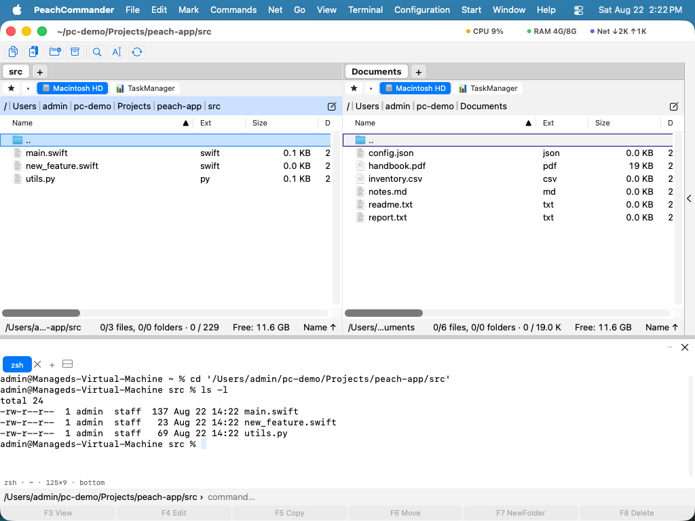

Terminalul încorporat
Peach Commander poate rula un shell adevărat în propria fereastră, într-o bandă de jos numită doc. Este shell-ul dumneavoastră de autentificare — cel indicat de $SHELL, sau /bin/zsh dacă acela nu este utilizabil — deci PATH-ul, aliasurile și funcțiile dumneavoastră sunt toate acolo, exact ca în Terminal.
Nu este același lucru cu Deschide Terminal aici, care lansează aplicația Terminal de la Apple în dosarul curent și vă lasă cu două ferestre. Cel încorporat rămâne unde sunt fișierele dumneavoastră și știe de ele.
Este o extensie: dacă nu o doriți, dezactivați-o sau eliminați-o din Configurare ▸ Extensii…, iar docul pleacă odată cu ea.

(Figura: shell-ul rulează în dosarul afișat de panoul activ.)Deschiderea și deplasarea
Apăsați Ctrl împreună cu tasta din stânga lui „1” pentru a muta tastatura între panoul de fișiere și terminal. Scurtătura este legată de poziția tastei, nu de caracterul ei, deci este aceeași tastă fizică oricum ar numi-o aranjamentul dumneavoastră: accentul grav pe o tastatură US, ^ pe una germană, @ pe una franceză.
Tot restul se află în meniul Terminal:
| Acțiune | Ce face |
|---|---|
| Arată terminalul | Îl pliază și îl desface din nou; filele și ce rulează în ele rămân cum sunt |
| Comută între panou și terminal | Mută focalizarea tastaturii, fără să schimbe altceva |
| Filă nouă de terminal | Încă un shell, în același dosar |
| Închide fila de terminal | Îl închide — și întreabă întâi dacă mai rulează ceva în el |
| Împarte terminalul | Două shell-uri alăturate în aceeași filă |
| Mergi în dosarul panoului | Face cd în terminal acolo unde se află panoul activ |
| Inserează numele fișierelor selectate | Scrie numele selectate la prompt, între ghilimele |
| Rulează linia de comandă în terminal | Trimite shell-ului ce ați scris în linia de comandă, în loc să execute invizibil |
Cât timp terminalul are focalizarea, tastele funcționale merg acolo, nu la panoul de fișiere — F5 într-un editor de text din terminal trebuie să ajungă la editor. Bara tastelor funcționale spune asta, în loc să arate taste care nu vor declanșa nimic.
Puntea înapoi spre panou
Cmd-clic pe o cale din ieșirea terminalului și panoul merge acolo. Un fișier din ls, o cale dintr-o eroare de compilare, un nume din git status — un clic și îl priviți.
Acționează numai când cuvântul de sub indicator corespunde într-adevăr cu ceva care există. Un Cmd-clic pe text obișnuit nu face nimic, în loc să navigheze undeva la întâmplare, iar un clic simplu selectează textul ca înainte.
Trageți fișiere pe terminal și căile lor ajung la prompt, între ghilimele, gata pentru o comandă pe care o scrieți pe jumătate.
Lăsați panoul să urmeze shell-ul
Dezactivat implicit: când faceți cd altundeva în terminal, panoul rămâne unde este. Activați Lasă panoul activ să urmeze terminalul în pagina de configurări a terminalului și va urma.
Este nevoie de ajutorul shell-ului dumneavoastră, fiindcă un shell nu anunță unde a plecat. Pagina de configurări arată un fragment scurt de adăugat în ~/.zshrc și un buton pentru a-l copia; face ca zsh să raporteze dosarul de lucru (secvența de evadare OSC 7) înaintea fiecărui prompt. Fără fragment, configurarea este pornită și nimic nu urmează — de aceea fragmentul stă chiar alături.
Căutare și derulare înapoi
Cmd+F caută în ce a tipărit terminalul.
Un terminal păstrează implicit 5.000 de linii de derulare înapoi — destul cât să parcurgeți o compilare. Se schimbă în pagina de configurări. Valorile foarte mari sunt limitate, fiindcă o derulare de cincizeci de milioane de linii este o problemă de memorie a cărei cauză este imposibil de văzut din afară.
Unde stă
Terminalul se deschide în docul de jos, fiindcă aceasta este forma de care are nevoie: un shell are nevoie de lățime, iar panoul lateral, la cele 300 de puncte implicite, încape circa 44 de coloane acolo unde partea de jos a unei ferestre de 1200 de puncte încape 176.
Îl puteți totuși muta. Trageți-l în panoul lateral dacă vă convine mai mult, sau folosiți comenzile de plasare descrise în Extensii; mutarea reatașează același shell în loc să pornească unul nou, așa că ce rulează continuă să ruleze. Comenzile din meniul Terminal îl urmează: îl aduc în față acolo unde este, în loc să deschidă docul.
Filele revin când porniți aplicația din nou, în dosarele în care erau. Ce rula în ele, nu — o repornire încheie acele procese, ca în orice terminal. Revine și faptul că era deschis când ați ieșit.
Când ieșiți
Închiderea aplicației închide shell-urile. Ce mai rulează în ele este încheiat, așa cum închiderea unei ferestre Terminal încheie ce se află în ea. De aceea închiderea unei file în care rulează ceva întreabă întâi.